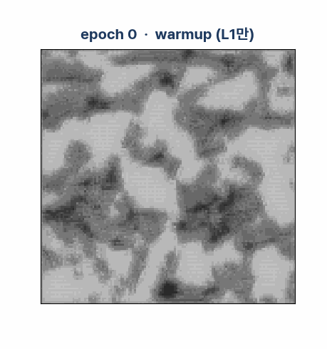
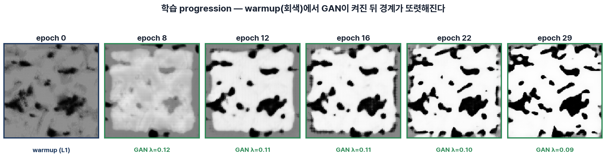
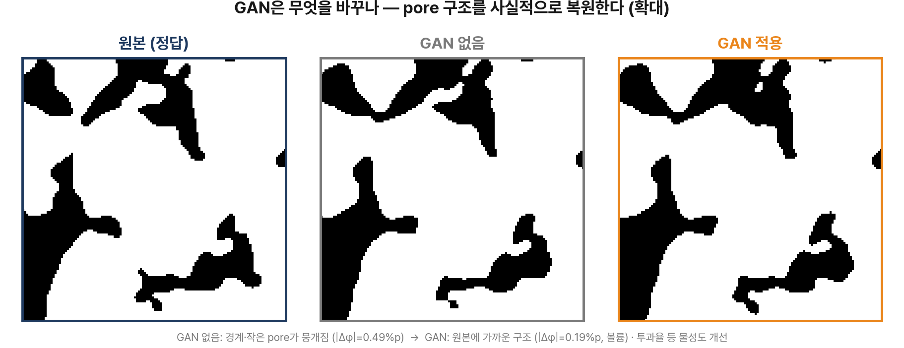

두 신경망의 경쟁,
적대적 학습
pix2pix GAN — "그럴듯한 평균" 대신 "진짜 같은 구조"를 만들도록 압박한다


6주 여정 — 이번 주는 GAN
W2에서 UNet은 선형 보간을 크게 이겼습니다. 하지만 결과를 자세히 보면 아직 뿌옇습니다. 오늘은 두 번째 신경망을 붙여 그 흐림을 걷어냅니다.
이겼는데, 왜 아직 뿌옇지?
UNet은 선형 보간을 크게 이겼습니다. 그런데 복원한 pore 경계를 확대해 보면 흐릿합니다. 원인은 우리가 쓴 손실 함수 L1 그 자체에 있습니다.
W3가 끝나면 할 수 있는 것
UNet은 선형 보간을 크게 이겼다
| 방법 | |Δφ| | SSIM |
|---|---|---|
| 선형 보간 (k=1) | 6.87 %p | 0.605 |
| UNet · L1 (k=1) | 0.47 %p | 0.731 |
→ 왜 그럴까? 범인은 손실 함수 L1.
평균의 함정 — L1은 "평균"을 고른다

threshold 전 출력을 보면 흐림이 보인다
이웃이 먼 어려운 보간(k=5)에서, 이진화하기 전의 확률 출력을 그대로 보면 — L1만 쓴 모델은 경계가 회색(불확실), GAN은 흑백(확신)입니다. 우리 mini 모델의 실제 출력.

흐림이 왜 문제인가 — 물성이 걸려 있다
그림을 심사하는 두 번째 눈
한 신경망이 슬라이스를 만들고, 다른 신경망이 "이거 진짜 암석 맞아?" 하고 심사합니다. 둘이 경쟁하며 함께 실력이 늡니다 — 이것이 GAN(Generative Adversarial Network).
위조지폐범 ↔ 감별사
Generator는 W2의 UNet, Discriminator는 새 판별망
적대적 학습 = min-max 게임
hinge 손실 — "확실히 맞히면 벌점 0"

G는 이걸 + 로 밀어 $-D=+0.4$ 를 줄이려 함.
G가 잘 속여 $D(G(x))=+0.8$ 이 되면 → $\mathcal{L}_G^{\text{adv}}=-0.8$ ↓.
우리 문제에 맞추기 — pix2pix
기본 GAN에 세 가지 장치를 더합니다: 조건부(conditional) · PatchGAN · spectral norm. 그리고 정확도를 지키는 L1·SSIM 손실과 균형을 맞춥니다.
조건부 GAN — 감별사도 "문제지"를 본다
PatchGAN — 전체가 아니라 "조각조각" 심사
Spectral Normalization — 감별사의 "힘"에 상한
전체 손실 — 정확도와 사실감의 균형
불안정한 줄다리기 길들이기
GAN 학습은 두 신경망이 서로 당기는 줄다리기라 잘 무너집니다. 무너지는 신호를 알아보고, 안정화 레시피를 적용합니다.
줄다리기가 무너지는 세 신호
안정화 레시피 — 우리가 실제로 쓰는 것
λ 하나로 흐림 ↔ 환각 사이를 조절
결과, 그리고 정직한 평가
GAN은 무엇을 바꿨을까요? 그리고 무엇을 바꾸지 못했을까요? 숫자가 전부가 아니라는, 이번 주 가장 중요한 교훈으로 마무리합니다.
학습이 진행되며 흐림이 걷힌다
warmup 동안(재구성만)은 회색으로 뭉툭하다가, 판별자가 붙는 순간부터 경계가 또렷해집니다. 우리 mini 모델의 실제 학습 스냅샷.


GAN 없음 vs GAN — 경계와 작은 pore

GAN은 구조를 사실적으로 복원해 물성까지 개선한다

단, 숫자 하나(단일 슬라이스 |Δφ|)로 판단하지 말 것.
코드로 직접
model_utils.py 에 판별자와 GAN 학습이 추가됐습니다. W2 체크포인트를 이어받거나 처음부터, 두 경로 모두 열려 있습니다.
판별자와 적대적 학습, 한눈에
D = PatchDiscriminatorMini(cond_ch=2, base=32)
# hinge 손실
d_loss = d_hinge_loss(D, cond, y_real, y_fake)
g_adv = g_hinge_loss(D, cond, y_fake)
G, D, hist = train_gan(bb, k=5, preset='fast',
lambda_gan=0.1, device=DEVICE)
# 경로 ② W2 체크포인트 이어받아 미세조정
G0, _ = load_ckpt('unet_mini_fast.pth')
G, D, hist = train_gan(bb, generator=G0,
lambda_gan=0.1, device=DEVICE)
노트북 흐름과 탐구 과제
스스로 답해보기
· L1은 왜 흐린 결과를 내나? "평균의 함정"을 한 문장으로.
· 판별자에 이웃(조건)을 함께 넣는 이유는?
· λ를 키우면 왜 |Δφ|가 나빠질 수 있나?
· D 손실이 0에 붙으면 무슨 일이 일어나나?
· "숫자는 좋은데 구조가 나쁘다"의 실제 예는?
· GAN이 준 것과 뺏은 것을 각각 한 가지씩.